⚙️ アプリ基本設定に3つ入れる
- 1ライセンスキー。契約完了メールに書いてあるキーを貼ります。
- 2Keepa の API キー。Keepaのサイトにログインして、上のメニュー「Data」→「API」で見られます。
- 3AmazonセラーID。セラーセントラルの出品者ID（Aから始まる英数字）です。
- 4「設定を保存」を押します。
あとから直すときは、ホーム左上の⚙️で開きます。同じ画面の「プラン変更・解約・お支払い状況の確認はこちら」から、ご契約の手続きができます（ご契約について）。
最初の設定から、毎日の使い方、自動で回す巡回まで、画面ごとに説明します。画面の赤い枠と番号が、操作する場所です。画像は押すと大きく開きます。
最初の設定は1回だけ。あとは毎日、調べて・仕入れて・売れたら記帳、の繰り返しです。NEXT・極は、仕入れ候補探しをアプリが自動で回します。
プランに入っていない画面を開くと、空の一覧のかわりに「🔒 ○○は NEXT極 の機能です」のような案内が出ます。こわれているわけではありません。
| できること | ライト | NEXT | 極 |
|---|---|---|---|
| Amazonリサーチ（一発解析・バーコード読み取り） | ○ | ○ | ○ |
| リサーチパネル（Chrome拡張） | ○LITE | ○ | ○ |
| 販売管理・価格改定・月別・経費・一括商品登録 | ○ | ○ | ○ |
| 仕入れリスト | — | ○ | ○ |
| ウォッチャー巡回（10サイト・1日2回） | — | ○ | ○ |
| 自動リサーチ（セラー巡回） | — | ○ | ○ |
| スナイパー巡回（3サイト・何周でも） | — | — | ○ |
お渡しするChrome拡張は、ライト＝SearchHub NEXT LITE、NEXT＝SearchHubNEXT、極＝SearchHubNEXTとSearchHub SniperNEXTの2つです。
キーを3つ入れるだけで使い始められます。パソコンとスマホ、それぞれで1回ずつ入れます。台数の制限はありません。
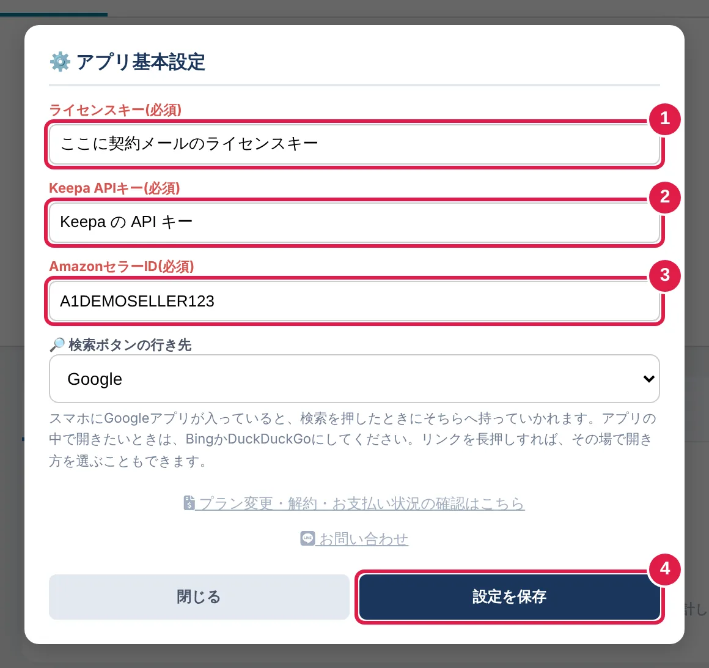
あとから直すときは、ホーム左上の⚙️で開きます。同じ画面の「プラン変更・解約・お支払い状況の確認はこちら」から、ご契約の手続きができます（ご契約について）。
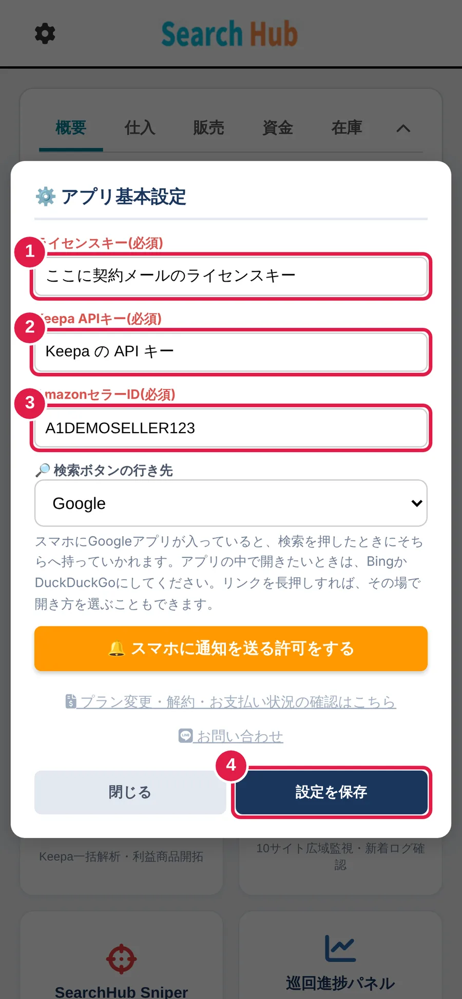
「🔎 検索ボタンの行き先」は、スマホで検索ボタンを押したときに開くサイトです。Googleのアプリに飛ばされるのがいやな時は、BingかDuckDuckGoにします。「🔔 スマホに通知を送る許可をする」を押すと、巡回で見つかった商品をスマホに通知できます。
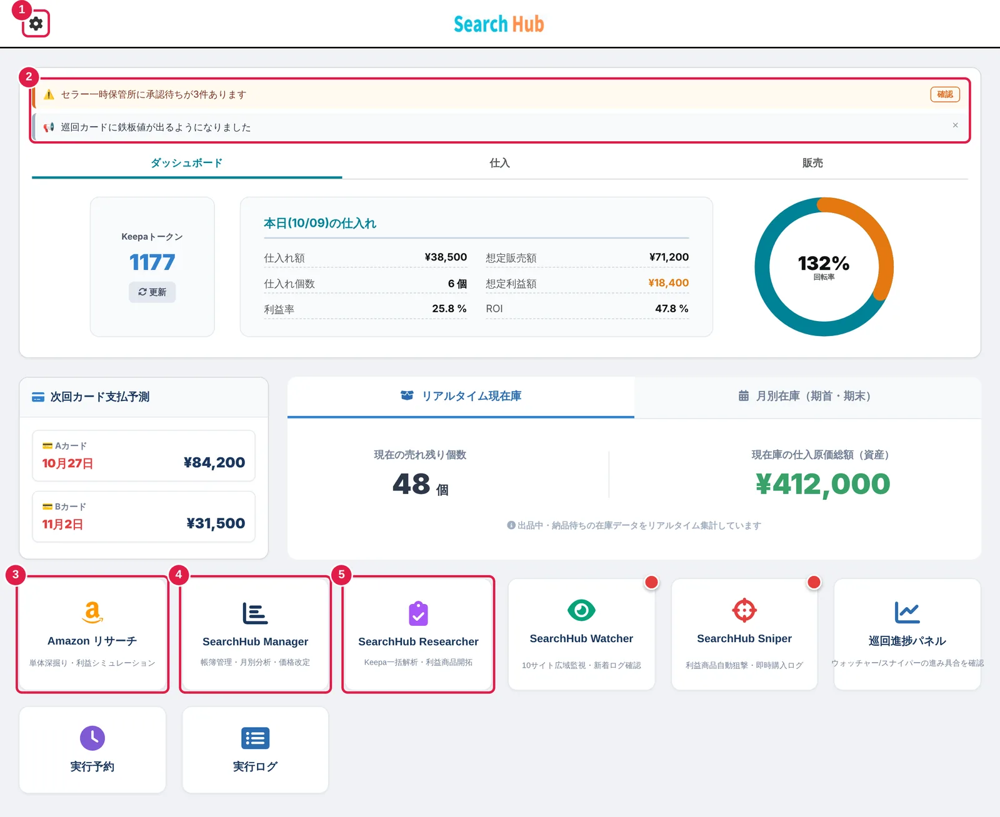
上の段には今日の仕入れ、Keepaトークンの残り、在庫回転率。「仕入」「販売」タブで月ごとのグラフが見られます。パソコン版ではカードの支払い予測と在庫の金額も出ます。下のボタンには、ほかに Watcher・Sniper（巡回で見つかった商品）、巡回進捗パネル、実行予約、実行ログがあります。
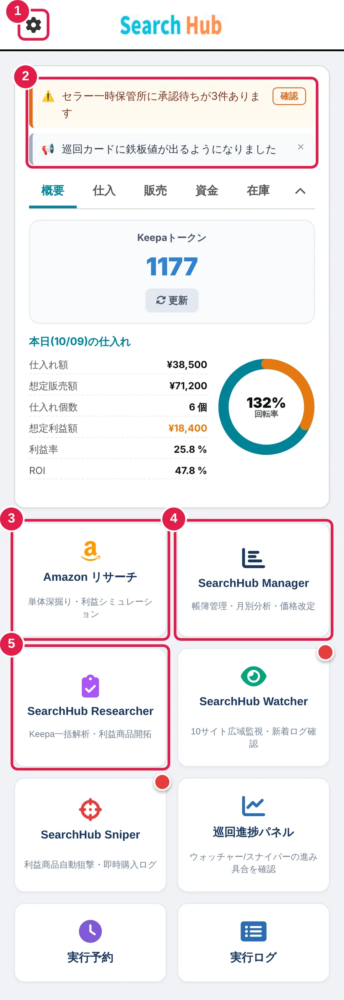
番号はパソコン版と同じです。スマホ版は上のタブが「概要・仕入・販売・資金・在庫」の5つで、カードの支払い予測は「資金」、在庫の金額は「在庫」タブにあります。右端の「︿」で上の段をたためます。
ホーム以外の画面は、左上の「‹」か、画面を右へスワイプで戻れます。
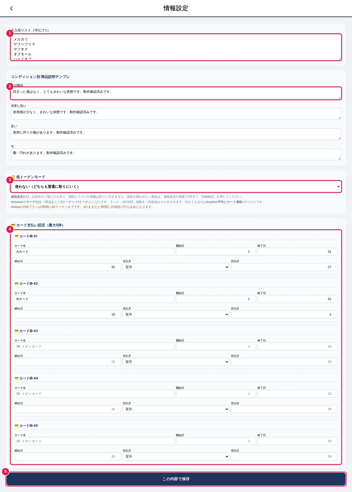
ASIN・JAN・型番・AmazonのURLのどれかを入れて「解析」。相場・売れ行き・利益が1画面で分かります。
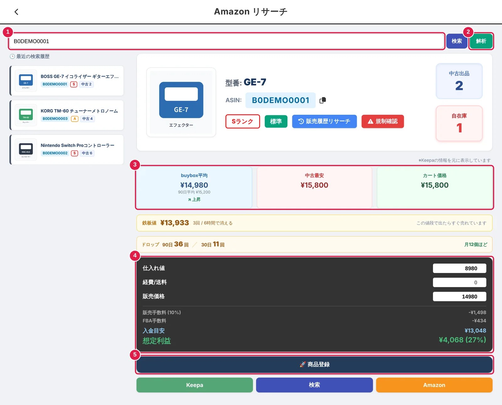
ほかに出るもの：ランク（SSR〜E。売れやすさと値段の安定ぐあい）、【標準】【大型】、中古出品数、自在庫（帳簿にまだ売れていない同じ商品がある数）、鉄板値（この値段で出たらすぐ売れている値段）、ドロップ（90日・30日に売れた回数の目安）。左には最近調べた商品が残ります。
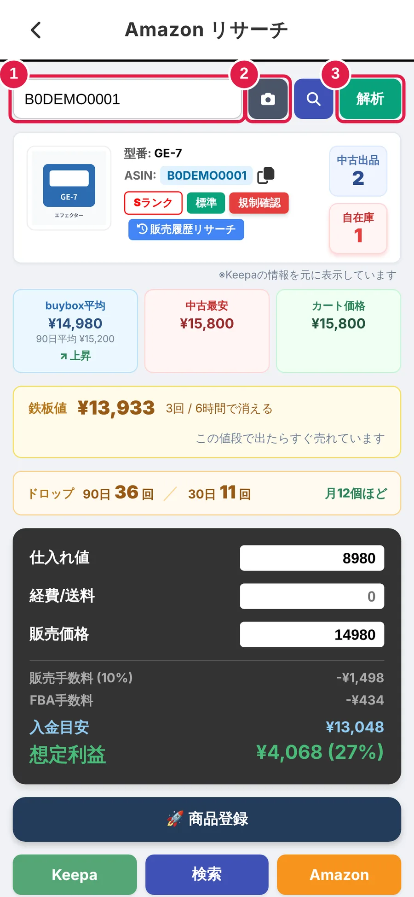
お店でスマホを使うときに便利です。結果の見かたはパソコン版と同じです。
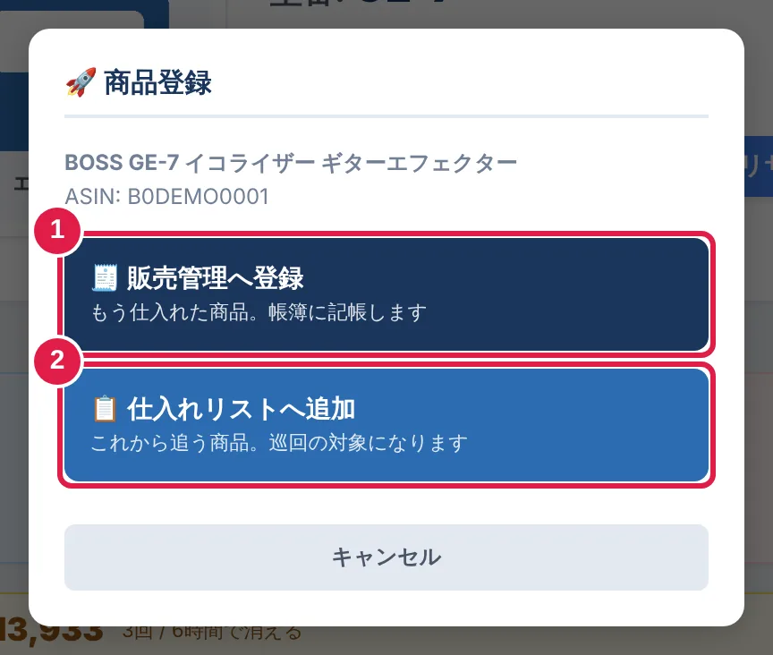
結果の「販売履歴リサーチ」を押すと、同じ商品を前にいくらで仕入れて、いくらで売れたかが出ます。
仕入れた商品の帳簿と、売る側の管理です。ホーム →「SearchHub Manager」から開きます。
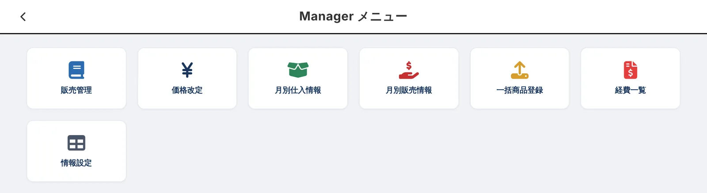
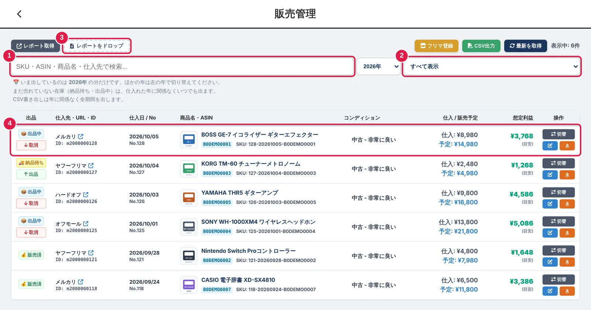
Amazonリサーチを通さずに買った物は「フリマ登録」から手で入れられます。「CSV出力」は古物台帳として全期間を書き出します。
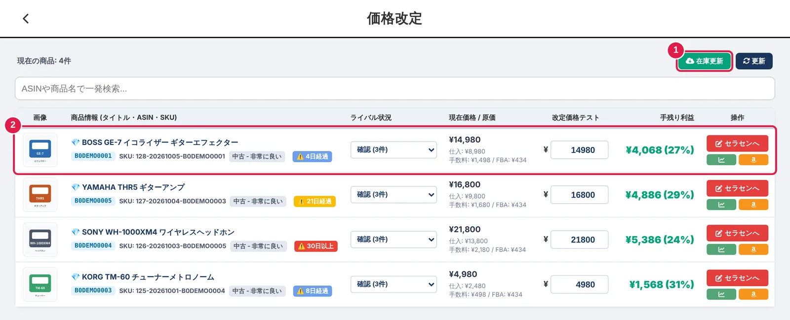
この画面は計算だけで、Amazonの値段は書き換えません。値段を変えるのは「セラセンへ」から、セラーセントラルで行います。
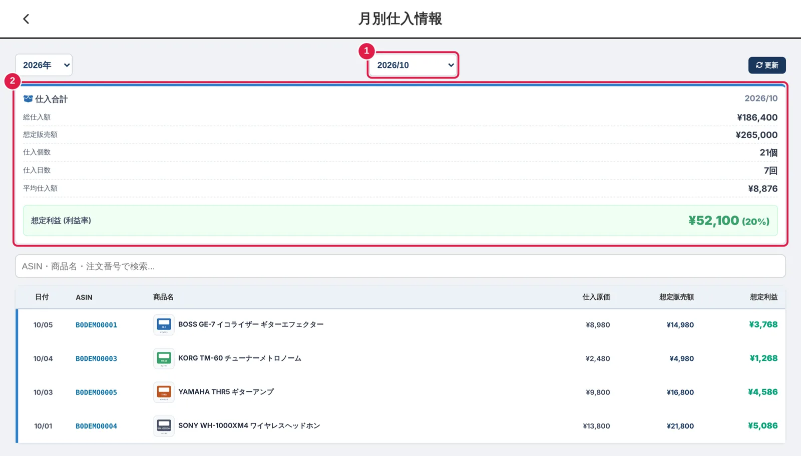
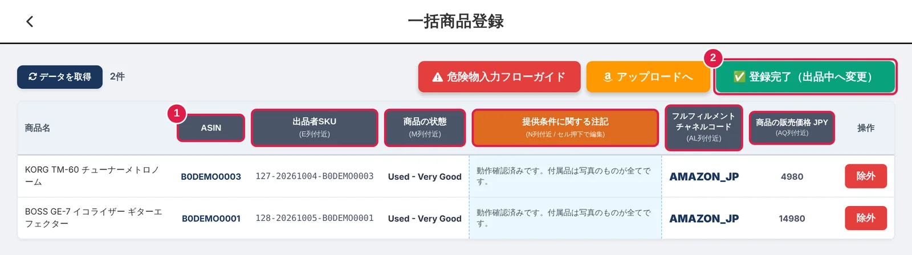
今回出さない商品は「除外」で外せます。危険物の入力がわからないときは「危険物入力フローガイド」を見てください。
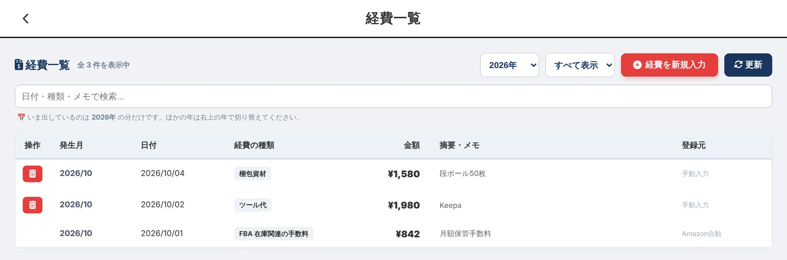
梱包資材やツール代は「経費を新規入力」から入れます。Amazonの在庫保管料などは、販売管理に支払レポートを落としたときに自動で入ります（「Amazon自動」と出ている行は消せません）。
メルカリやヤフオクなどのページを見ながら、右下のパネルでAmazonの相場と利益が分かります。パソコンのChrome専用です。
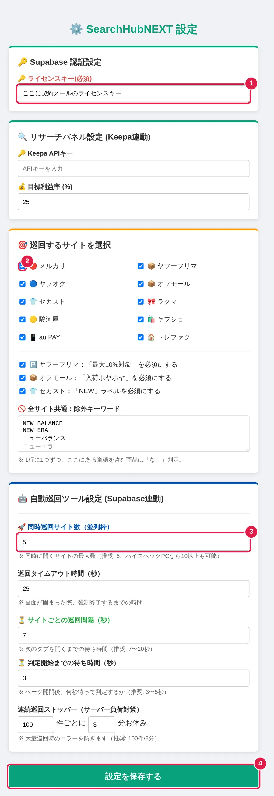
契約完了メールのリンクから、Chromeウェブストアで追加します。ライトはSearchHub NEXT LITE、NEXT・極はSearchHubNEXTです。極はSearchHub SniperNEXTも入れます。
アイコンを押しても何も開きません。設定は、Chrome右上のパズルのマーク → 拡張機能の︙ →「オプション」で開きます。
Keepa APIキーの欄は控え用です。ふだんはアプリの⚙️に入れたキーを使うので、空のままで動きます。目標利益率は、パネルに出る仕入れ値の目安に使います。
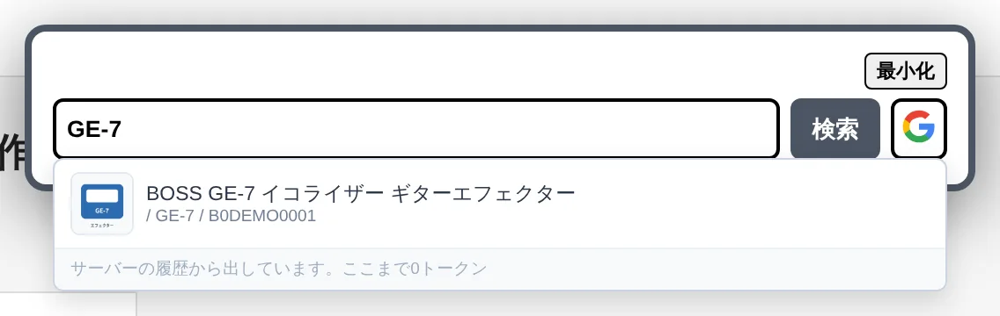
Amazonの商品ページを開くと、パネルがその商品を自動で調べます。
ほかのサイトでは自動では調べません。ページの型番をマウスでなぞる（選ぶ）か、パネルの欄に型番を打つと、過去に調べた商品から候補が出ます（ここまでトークンは使いません）。候補を押すか「検索」を押すと調べます。
AmazonのURLを欄に貼ると、いちばん確実で、トークンも少なくてすみます。「G」はその言葉＋Amazonでウェブ検索します。「最小化」でパネルを小さくたためます。
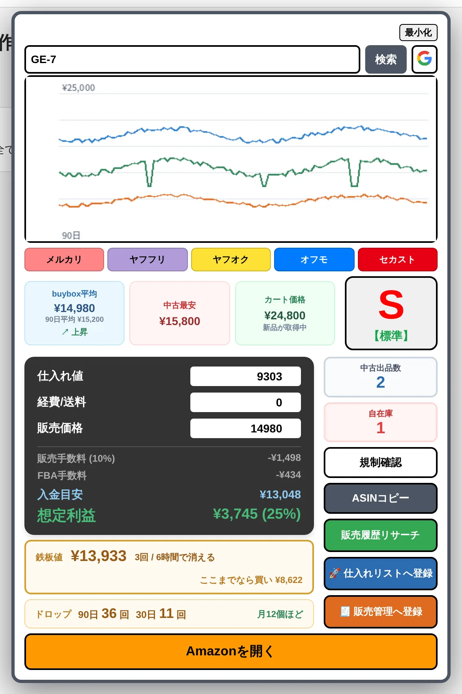
ライトのパネルには「仕入れリストへ登録」がありません。ライトは最初、トークン節約のため buybox平均とカート価格が「-」になります（低トークンモード）。
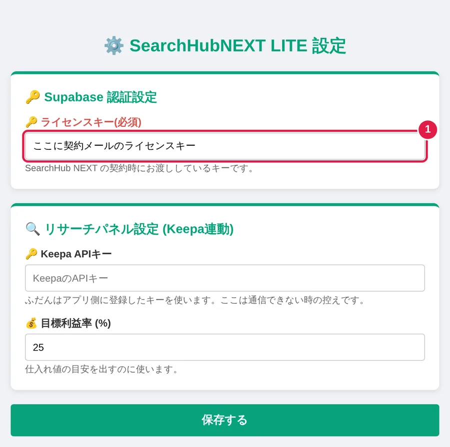
LITEのパネルが出るのは、Amazon・メルカリ・ヤフーフリマ・ヤフオク・オフモール・セカンドストリートです。
仕入れリストの商品が、フリマなどに安く出ていないかを、Chrome拡張が自動で探しに行きます。見つかった商品はアプリの Watcher・Sniper に並びます。
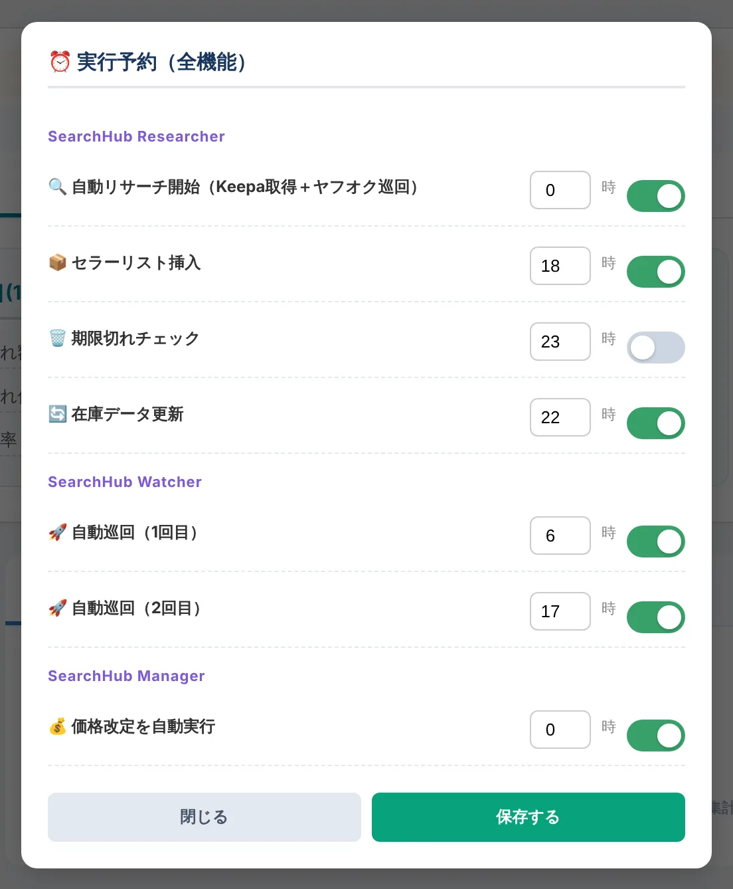
毎日決まった時刻に、決まった作業を自動で動かします。時刻を変えて、右のスイッチでオン・オフ、最後に「保存する」。
使わない作業はオフのままで大丈夫です。オンにするほどKeepaトークンを使います。
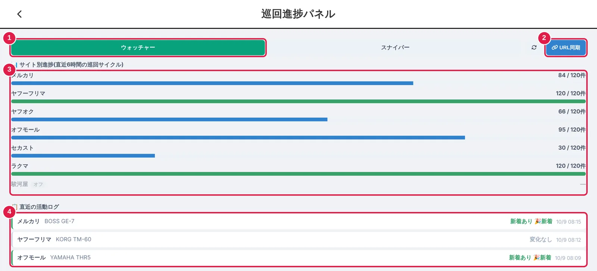
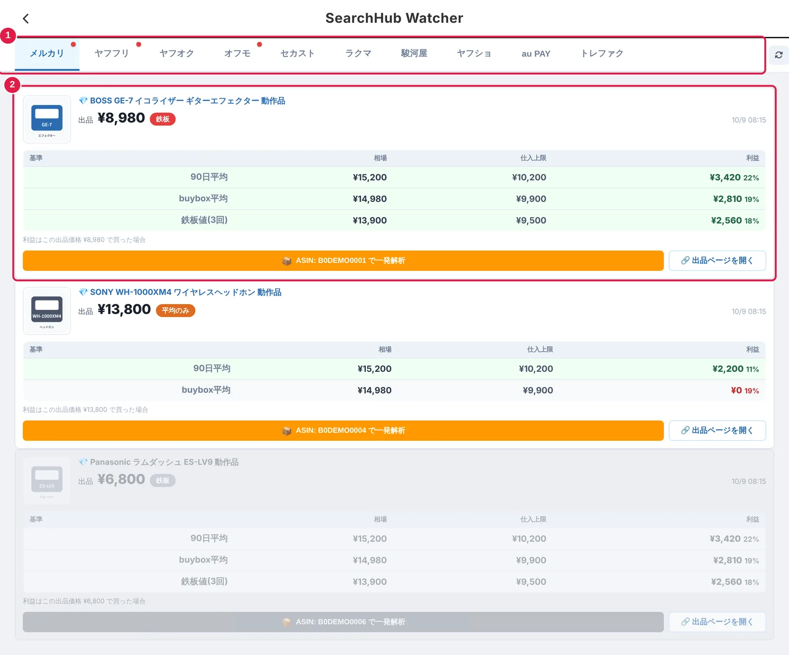
「ASIN：○○ で一発解析」でAmazonリサーチが開き、そのまま帳簿に登録できます（仕入先とURLも自動で入ります）。「出品ページを開く」で、出品ページへ行けます。見たカードはグレーになります。SearchHub Sniperの画面も同じ形です 極。
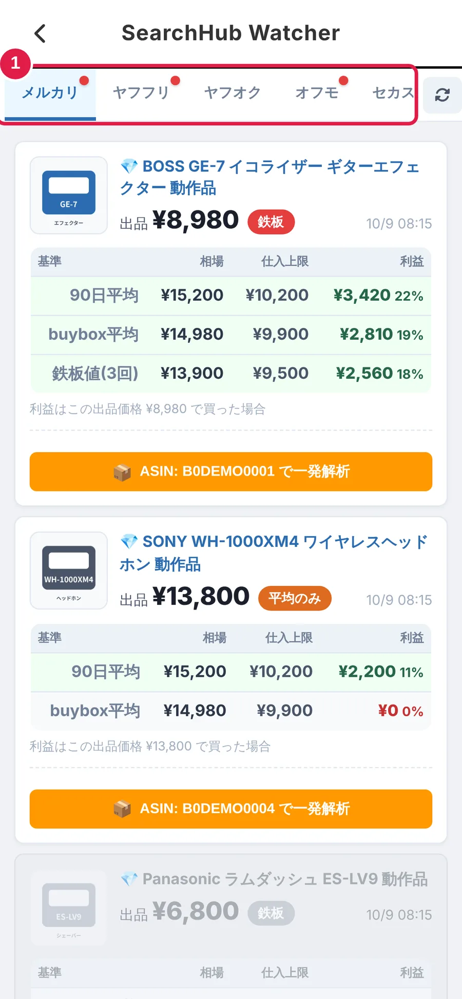
巡回はパソコンで回り、見つかった商品はスマホ版でも同じように見られます。スマホ版のカードは、最初から表が開いた形です。
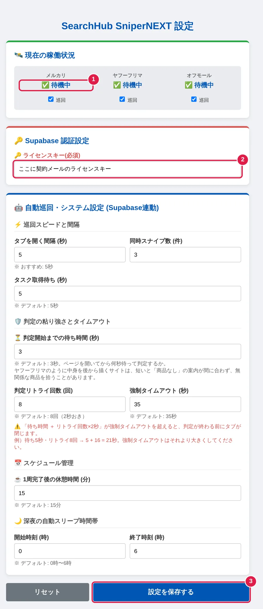
商品があるのに「なし」になるときは「判定開始までの待ち時間」を1〜2秒増やします。「待ち時間＋リトライ回数×2秒」が「強制タイムアウト」より短くなるようにしてください。「リセット」はライセンスキーも消します。押したらキーを貼り直してください。
朝パソコンが自分で起きて、Chromeでアプリのページを開くようにします。契約完了メールのリンクから設定一式（ZIP）をダウンロードして、中の手順書のとおりに進めてください。15分ほどで終わります。
| セット | 向いている使い方 |
|---|---|
| A 通し運転 | 1台で全部やる方。巡回専用機でウォッチャーとスナイパーを両方回す方。 |
| B 朝と夕方 | 2台に分けていて、その機械ではウォッチャーだけを回す方。 |
いちばん多いつまづきは「朝パソコンが起きていない」で、ほとんどは電源設定の「スリープ解除タイマーの許可」が無効になっています。「起きているのにChromeが開いていない」は、ロック画面で止まっています。どちらも手順書に直し方があります。
条件に合うAmazonのセラーを見つけ、そのセラーの商品をKeepaで自動で調べて、利益の出そうな商品を「リサーチリスト」に残します。良い物を仕入れリストへ送ると、巡回が探し始めます。
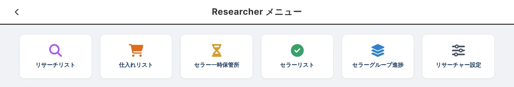
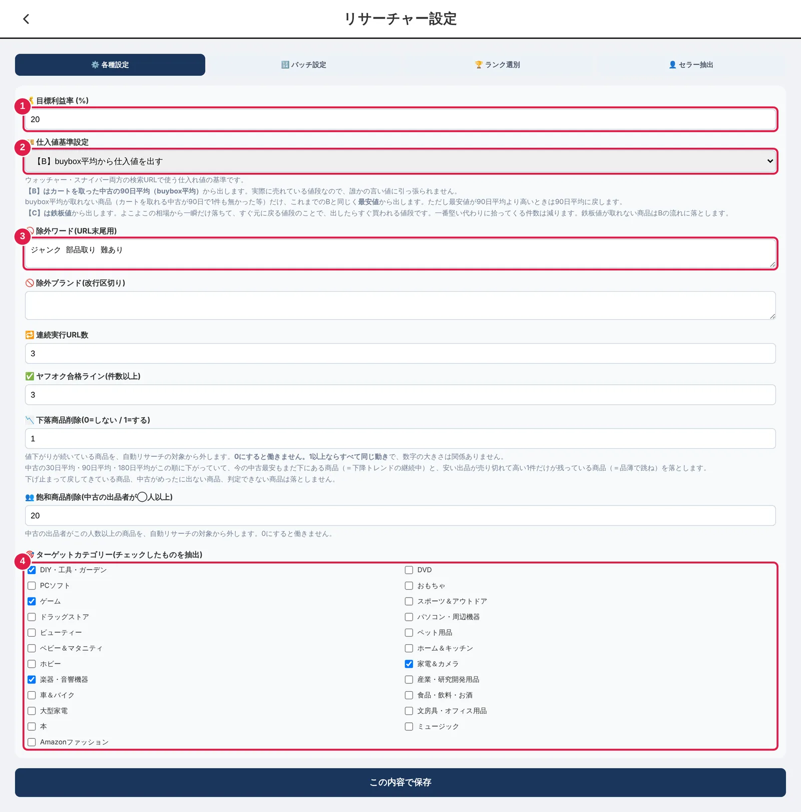
ほかのタブ：「バッチ設定」（1回に調べる件数）、「ランク選別」（残すランク・値段の幅）、「セラー抽出」（候補にするセラーの評価数・在庫数）。最後に「この内容で保存」。
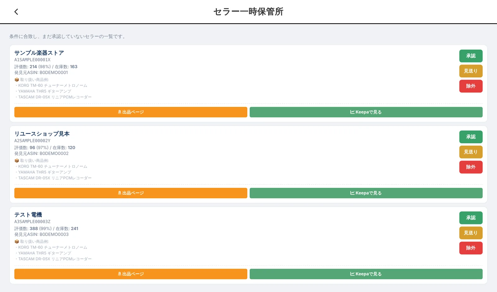
条件に合ったセラーが届きます。扱いたいジャンルのセラーだけ「承認」してください。「見送り」はいったん保留、「除外」は二度と出しません。承認したセラーは「セラーリスト」に入り、その商品が自動リサーチにかかります。
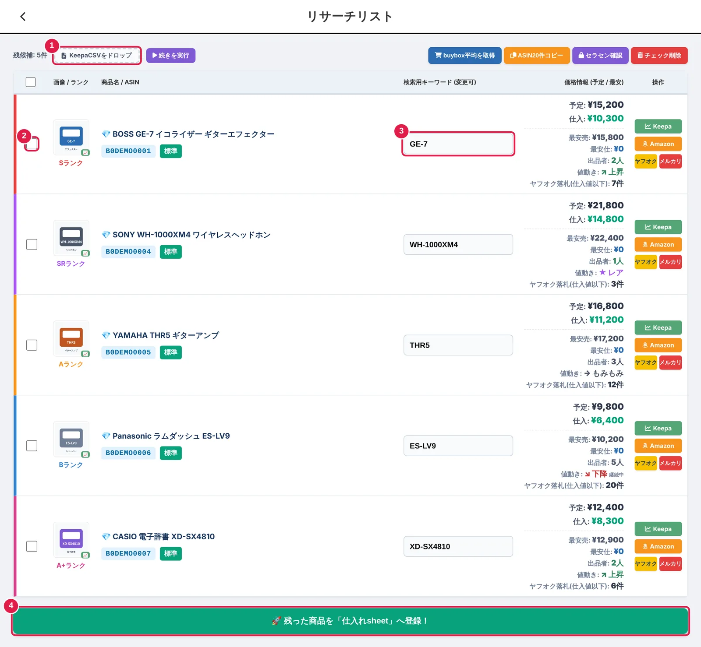
商品の写真を押すとKeepaのグラフが開きます。「buybox平均を取得」でbuybox平均を取り直せます（1商品3トークン）。
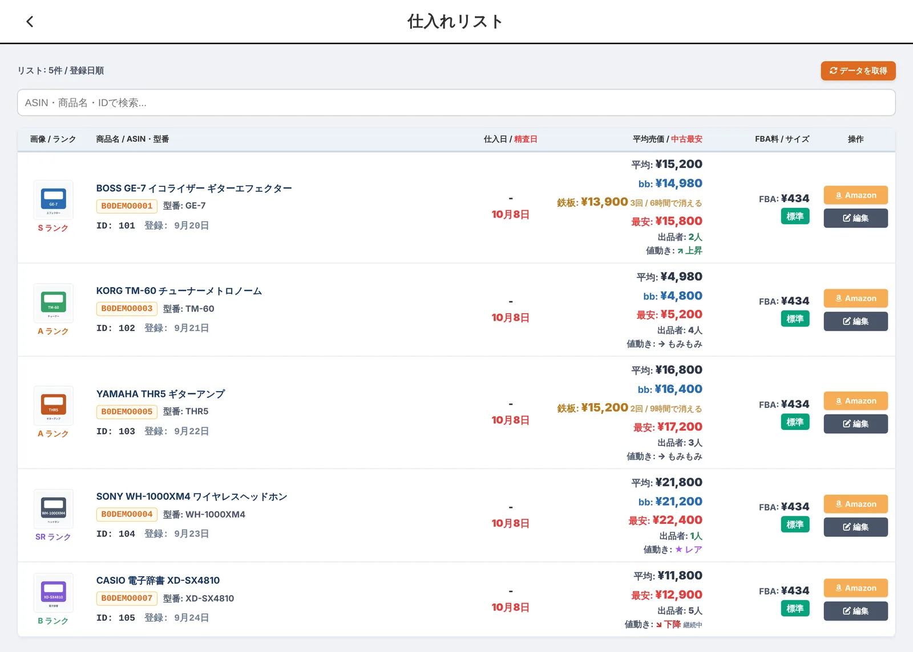
巡回が探しに行く商品の一覧です。平均売価・buybox平均・鉄板値・最安・出品者数・値動きが出ます。「編集」で検索キーワード（型番）と仕入日を直したり、削除したりできます。関係ない商品ばかり見つかるときは、検索キーワードにメーカー名を足してください。
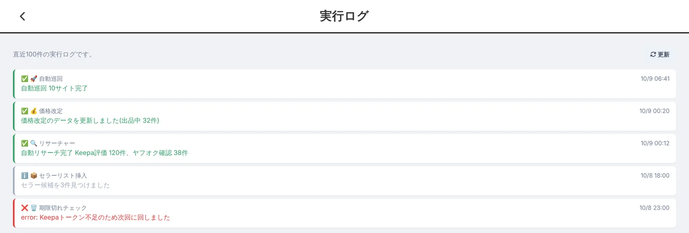
自動で動いた作業の記録です（直近100件）。緑はうまくいった、赤は失敗です。「動いていないかも」と思ったら、まずここを見てください。赤で「Keepaトークン不足」と出ていたら、トークンの節約を見直します。
相場を調べるたびに、Keepaのトークンを使います。トークンは1分ごとに決まった数だけ増え、1時間たつと消えます（ためておけるのは1時間分まで）。残りはホームの「Keepaトークン」で見られます。
| すること | 使うトークン |
|---|---|
| ASIN・AmazonのURLで調べる | 3（低トークンモードなら1） |
| 型番で調べる（過去に調べた商品にある） | 3（低トークンモードなら1） |
| 型番で調べる（初めての型番） | 13 |
| 候補を出す・値動きグラフ画像 | 0 |
| リサーチリストでグラフを開く | 1 |
| buybox平均を取得（リサーチリスト） | 1商品 3 |
Manager →「情報設定」の「低トークンモード」で選びます。
最初は、ライトが「両方」、NEXT・極が「使わない」になっています。自分で選べば、その設定が使われます。NEXT・極は自動リサーチや巡回でたくさん使うので、1分に20トークン以上増えるKeepaのプランが必要です。
⚙️アプリ基本設定に、ライセンスキー・Keepa APIキー・AmazonセラーIDの3つが入っているか確かめてください。3つそろわないと動きません。
いまのプランに入っていない機能です。こわれているわけではなく、データも消えていません。使いたいときはプランを変えると使えるようになります。
順に確かめてください。① 仕入れリストに商品があり、巡回進捗パネルで「URL同期」をしたか ② 拡張機能にライセンスキーを貼って保存したか ③ パソコンのChromeで「パソコン版アプリ」のページを開いているか ④ 拡張の設定で、巡回するサイトにチェックが入っているか ⑤ 実行予約で「自動巡回」がオンか（ウォッチャーは予約の時刻にしか回りません） ⑥ パソコンが寝ていないか。
拡張機能の設定で「判定開始までの待ち時間」を1〜2秒増やしてください。
仕入れリストの「編集」で、検索キーワードにメーカー名を足してください。直したら巡回進捗パネルの「URL同期」を押します。
出てこないときは、リサーチャー設定の目標利益率を下げて、実行ログに赤い行がないか見てください。多すぎるときは、目標利益率を上げるか、承認するセラーを減らしてください。
低トークンモードを使う、実行予約で使わない作業をオフにする、リサーチャー設定のバッチ件数を減らす、のどれかで減らせます（くわしく）。
同じライセンスキーを、それぞれの⚙️に入れてください。台数の制限はありません。
契約完了メールに書いてあります。見つからないときは、下のお問い合わせへご連絡ください。
迷惑メールのフォルダに入っていないか見てください。
お問い合わせ：契約完了メールにそのまま返信するか、searchhubnext@gmail.com へ。「どの画面で・何を押したら・どうなったか」と、画面の写真があると早く分かります。
同じ内容を、声つきの動画でも見られます。再生ボタンを押すと読み込みが始まります。ライトの方は①〜③だけで大丈夫です。
全プラン。キーの入れ方、ホームの見かた、情報設定。下の目次を押すと、そこから再生します
全プラン。Amazonリサーチとリサーチパネル（拡張）。下の目次を押すと、そこから再生します
全プラン。販売管理・一括商品登録・価格改定・月別・経費。下の目次を押すと、そこから再生します
NEXT・極。拡張の設定、実行予約、見つかった商品、自動リサーチ。下の目次を押すと、そこから再生します